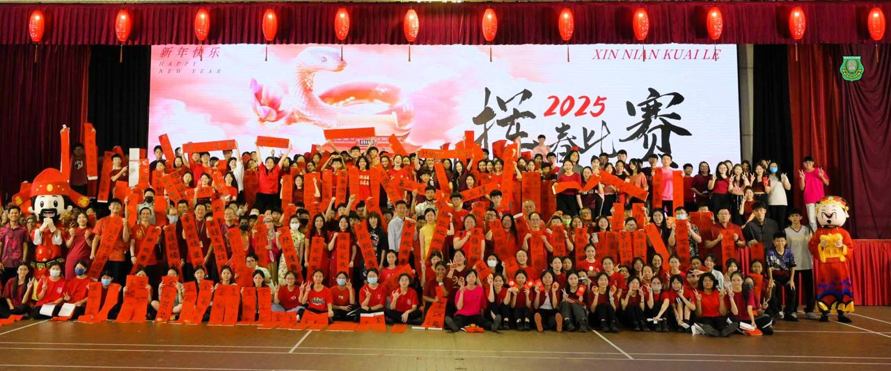
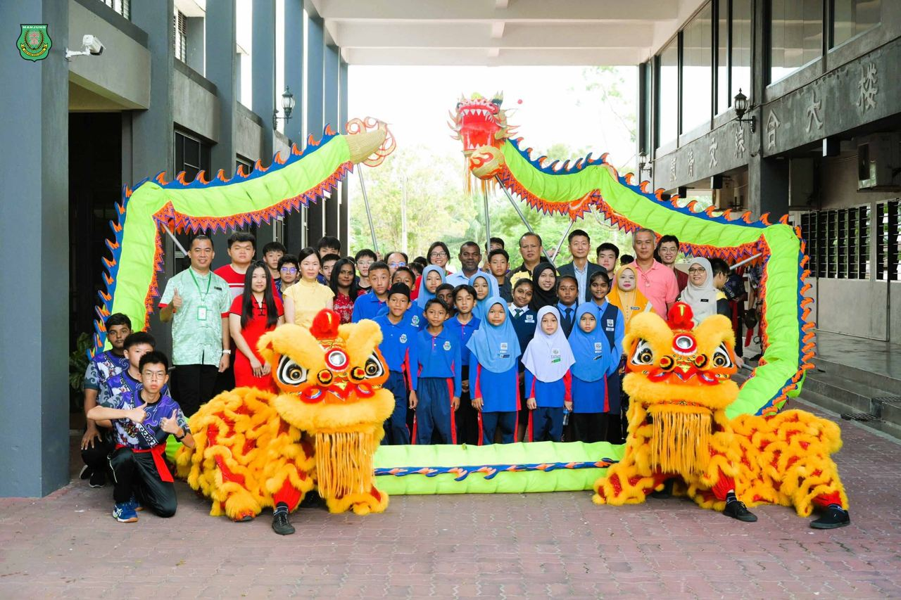
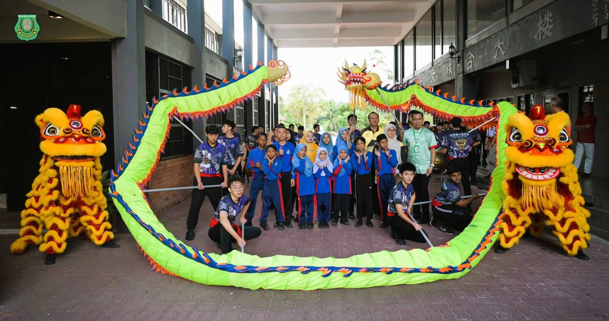
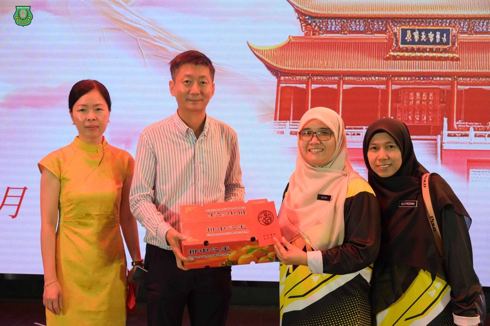
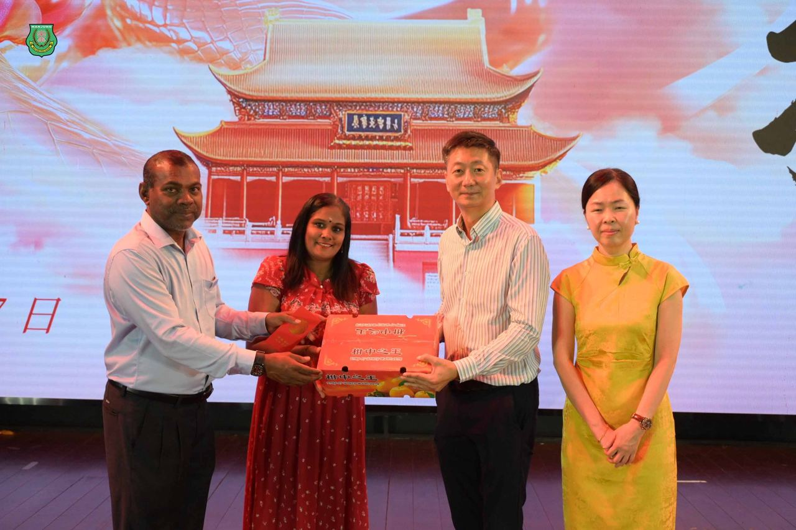
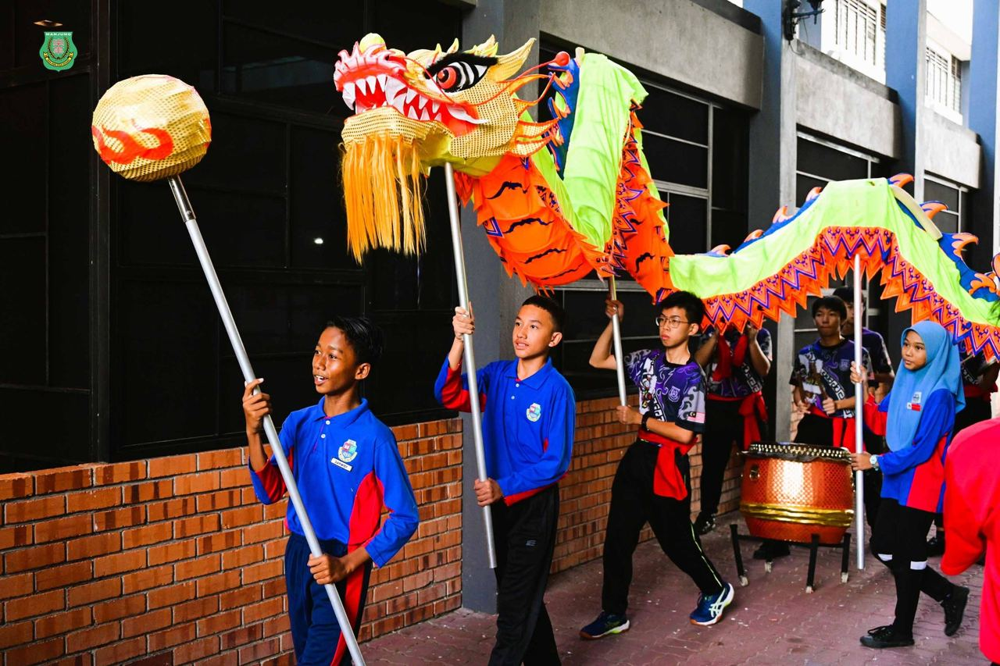
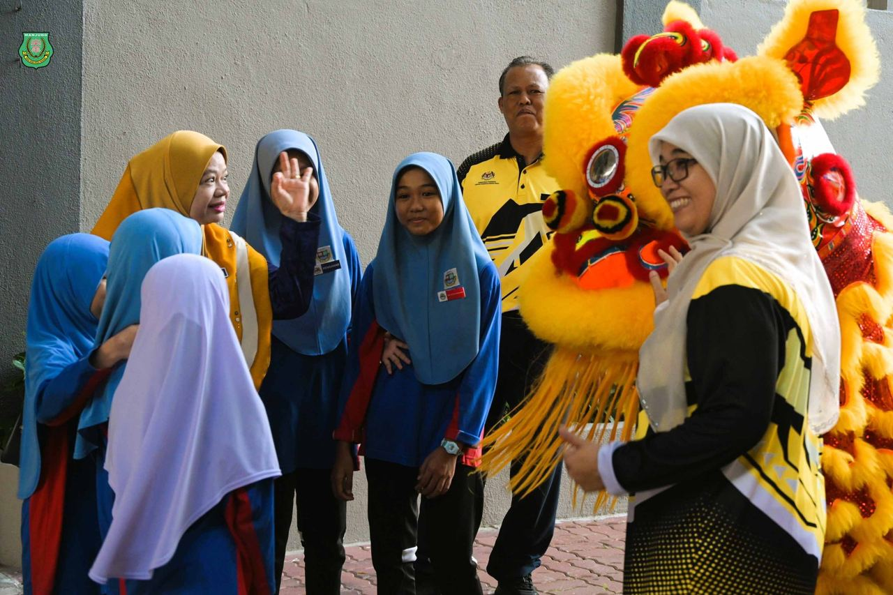
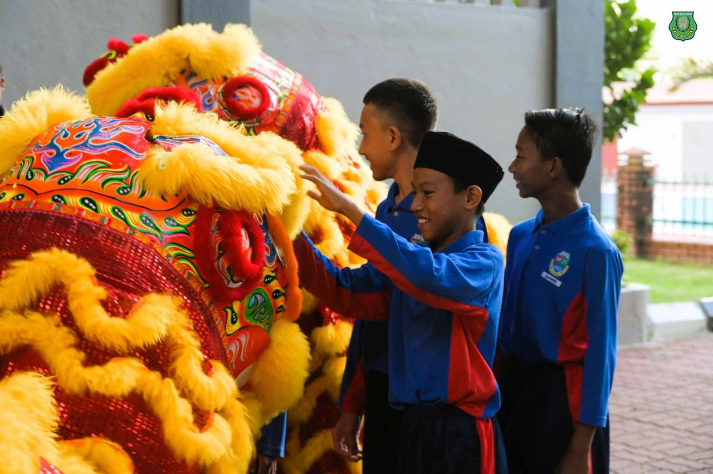

乙巳年挥春比赛 暨 新春大团拜
乙巳年挥春比赛 暨 新春大团拜
诚邀友族学校师生齐贺新春
本校曼绒南华独中于日前举办乙巳年挥春比赛暨新春大团拜，除了邀请董家教成员前来出席，更是秉持着“美美与共，天下大同”的理念，邀请附近的友族学校师生前来共同欢庆新春，体验挥春与舞龙舞狮文化，现场气氛融洽欢乐。
此次挥春比赛暨新春大团拜共有21位友族学校师生前来体验挥春与舞龙文化，分别来自SK Sungai Wangi与SJKT Ladang Sungai Wangi。SK Sungai Wangi校长Pn. Ruziah在受访时表示，两校地理位置靠近，同处双溪万宜，非常感谢南华独中邀请该校师生前去参加如此富有意义及浓厚文化色彩的活动，不但成功促成两校之间的交流，更是达到了民族文化之间的交融与理解，并表示日后希望能够有更多的文化交流的机会。
南华独中校长陈丽冰博士表示，董事长颜登逸先生提出的教育愿景“美美与共，天下大同”不仅体现在对华裔孩子，更开放给友族孩子的培养以及鼓励融入社区合作中，通过开放学校的现代化设施与活动，构建一个资源共享、彼此支持的环境，让社区内的每一个孩子、每一位社区成员都能在这里找到成长和发展的动力。
董事会也藉新春大团拜这欢庆场合，赠予全校教职员新春包裹，同时也提前拜年，派送红包与柑给全体教职员生，同欢共庆新春的来临。







